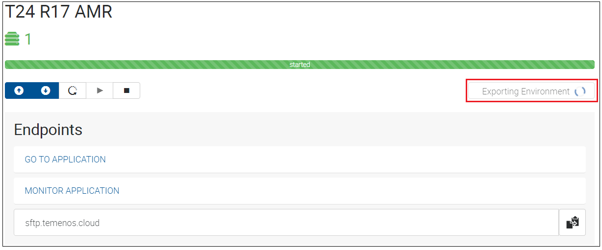
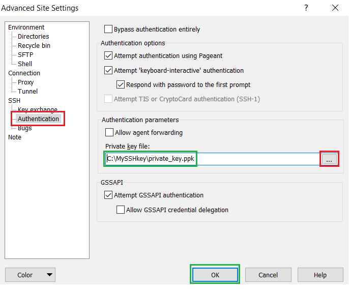
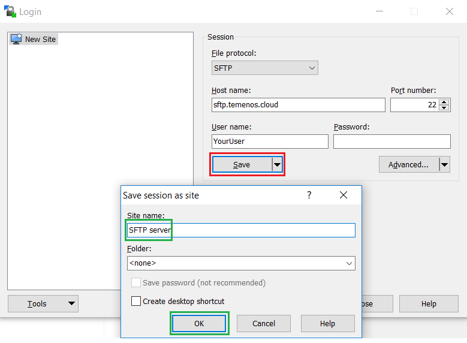
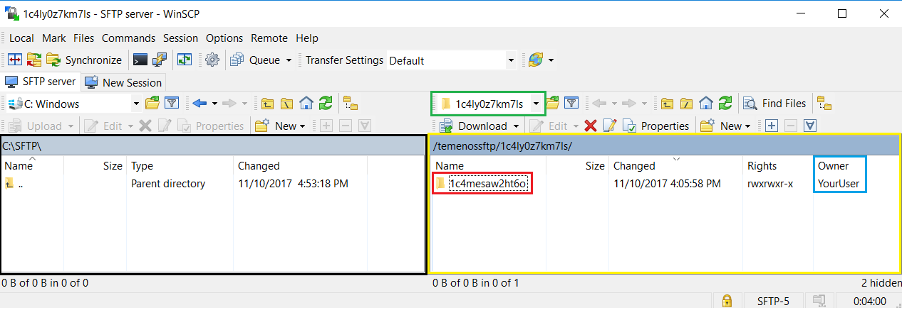
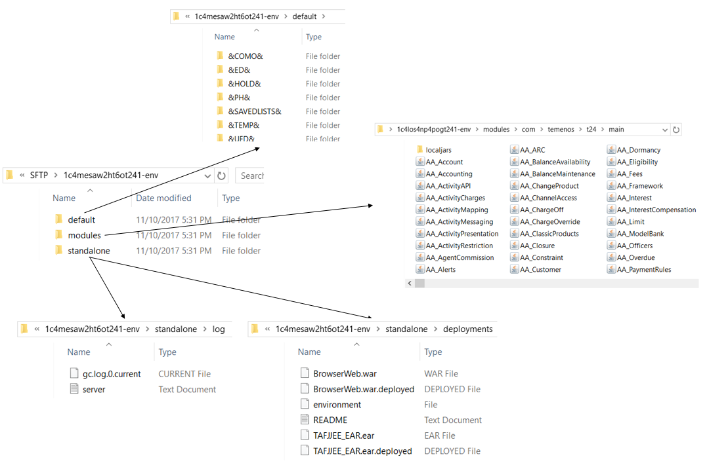
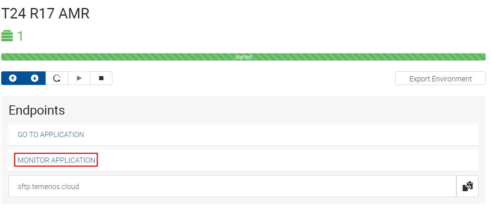
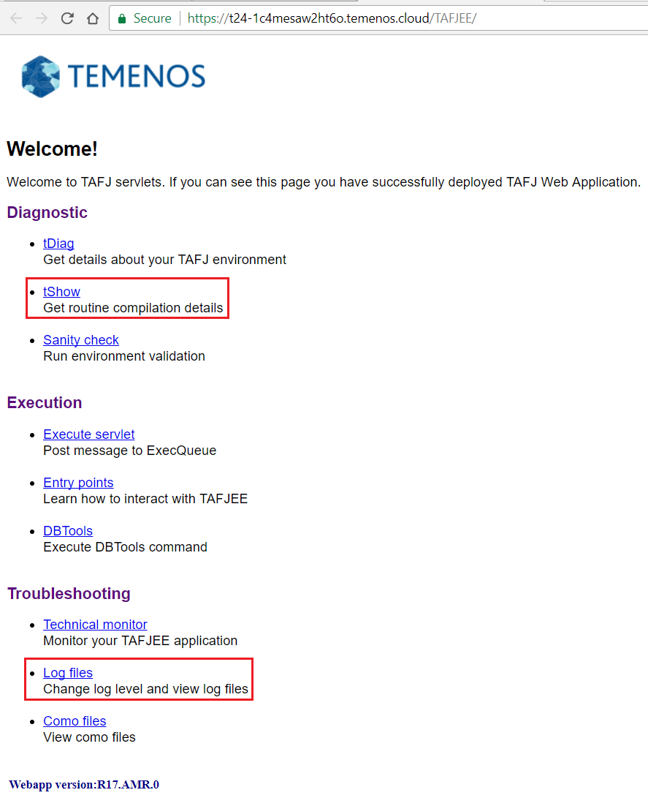

General Troubleshooting
This user guide shows different ways of accessing details related to your sandbox when deploying the following:
- Design Studio Packages
- Plugins
- Updates
- WAR files
1. Export Environment Details
The Export Environment Details functionality gives you access to different information related to your sandbox like:
-> the T24 UD (default) folder from your T24 sandbox
-> the jars deployed in your T24 sandbox
-> the war files deployed(with success or not) in your T24 sandbox
-> the jboss server.log from your T24 sandbox.
The environment details are exported in a SFTP server to which you have to connect in order to download the related files in your local machine. For this purpose, make sure you download and install WinSCP SFTP client.
The Export Environment Details functionality can be triggered from PaaS Portal following the bellow steps:
- Log-in to your organisation in PaaS Portal, go to your enviroment page and click on the Export Environment button for the T24 application.

- After click, the Export Environment button will become disabled(as per bellow picture), meaning that the export was triggered.

Note
The Export Environment action is finished when the Export Environment button becomes enabled.
In order to download the exported files of your environment from the SFTP server to your local machine:
- In PaaS Portal for your organisation, go to your environment page and Right click and copy the sftp.temenos.cloud Endpoint or click the copy to clipboard icon from the right:

- Open WinSCP SFTP client and create a new site that will allow you to connect to the SFTP server. Make sure you put sftp.temenos.cloud Endpoint as Host name, your PaaS user as User name and instead of password, the SSH key related to your PaaS user must be used.

- In order to attach the SSH key, press Advanced button, go to Authentification menu and select the private key related to your PaaS user. 
- After attaching your SSH key, save your site with any name for future use. 
- Click Login to connect to the SFTP server.
If connection is successful, you will have 2 sections in WinSCP:
-> the left section(highlighted in black) represents the location from your local machine where the environment details will be downloaded.
-> the right section(highlighted in yellow) represents the location of the exported environment details in the SFTP server; the environment details are saved in the SFTP server in /organisationID/environmentID folder structure.  - Go inside your environmentID folder and you will see a zip file that contains the Environment Details. In order to download the zip, select it and press F5.

- After downloading the zip file to your local machine, unzip it and you will have the bellow folder structure:

Based on the above folder structure, you can check the following:
-> If you deployed any update in your sandbox, check if jar/jars related to the update are changed in the jar list from modules/com/temenos/t24/main folder.
-> If you deployed any package in your sandbox, check if the jar related to the package is present in modules/com/temenos/t24/main/localjars folder.
-> If you deployed any war file in your sandbox, check if the war was deployed with success(a file named war_name.deployed should be present in standalone\deployments folder). The war deployment will be failed if a file named war_name.failed is present in standalone\deployments folder and this file must be checked for details.
2. Use TAFJEE tool
- Log-in to your organisation in PaaS Portal, go to your enviroment page and click on the Monitor Application Endpoint for the T24 application.

- The bellow page is opened. From this page, you can use:
-> tShow to check for any T24 routine from your sandbox details like the compilation date or the jar that contains the class of this routine.
-> Log Files from which you can check logs like DATABASE, RUNTIME or T24.
